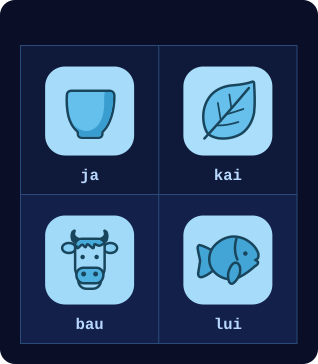
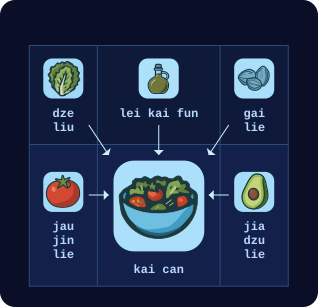

芬和泽坐在一处露天院子里的桌边。近旁几张桌子空着，别的桌旁坐着几拨少年和几对上了年纪的夫妇，正在吃饭。
从门口的豁口望出去，芬看见街对面有个少年正爬上一架木梯——梯子被匆匆架在一根公共路灯杆上。转眼他就到了顶，立刻动手拆一台监控摄像头。拆完，他把摄像头塞进一只黑布袋，又爬了下来。
泽用手指敲了敲桌面。芬的目光猛地收回来，重新专注地盯住泽手持终端上的一段动画。

“那好，我这是在看什么？”芬问。
“这是我上一盘民本棋的棋谱。那局我们用的是‘逢三转一百八’的规则。有人琢磨出了这种新打法，能破掉常规的墙形结构，拿垃圾把对手的地盘整个淹掉。我正想找些反制手段。”
“终局是什么样？你是想搭出一堵完美的墙，还是一路石头剪刀布到底？”
“嗯，记住，规则是可时间反演的。所以，任何能用某种方式造出来的墙，就能用某种方式拆掉。”
“啊？”
“还记得中学那会儿吗？我们觉得电影里那些好人也好、坏人也罢，把护盾发生器装在护盾外面，让对方找到、砸掉，简直蠢透了。”
“记得。”
“结果蠢的不是他们，是我们。因为物理定律是时间可逆的，所以没有什么是无敌的。任何能造出来的东西就能拆掉，你只要沿着造出它的那条路径倒着走一遍。所以，一堵拆不掉的护盾，就不是能造出来的东西。弱点一定藏在某处——问题只在于你藏得多好。”
“你是打算往防守方向发展还是怎么着？”
“嘿，我只想拿冠军。今年是我能参赛的最后一年，赢了就能进全国赛。”
“你是说，今年是你最后一次机会，让白对你刮目相看？”
“嘿——”
一台机器人滑到他们桌边。
“jie mo kai tu jie hei ja ma？”它用餐厅机器人那种刻意可爱的泽国语问。“要吃的还是喝的？”
芬看向机器人身上的屏幕。

他点了“kai”，又点了一张沙拉的图片。

芬又点了一下，接着按了几个按钮点了茶。机器人应声叫了一下，滑到泽身边。
“哇，现在什么都变成图片操作了！”
“我在去中心化大学最近上的那门课正好是语言学，所以在这儿终于轮到我当天才了。”
芬从背包里掏出一本薄薄的纸册子。封面上是班孙培的标志：两条横向伸出的手臂，一条从左、一条从右，在中间相握。标志上方是标题：“po so dze go ban de sia”——“泽国语第九版的构想”。
“再多讲讲？”
“还记得吧，我们把词根数量压到256个以后，大家都说还要接着压，早晚要用四大元素——地、气、火、水——来表达一切？”
“嗯？”
“结果班孙培现在想放弃那条路了。就停在256个词根，把泽国语的下一版往另一个方向推。”
“什么方向？”
“往视觉走。所以首先，他们真的在认真考虑把象形文字捡回来。”
“什么？！”
“当年改用维里迪亚字母是有道理的，因为老符号太难画。但我们现在有计算机了。问题不在输出，而在输入。诀窍在于，他们正在设计的新符号里，有一部分笔画编码整个读音：就算你忘了怎么念，看一眼符号也能知道准确的读法；符号剩下的部分则仍然尽量兼顾含义。”
“好吧……？”
“他们思路上的变化更大。语言到现在为止都只有一维，因为说话本身只有一维：一个词接一个词，写下来的也就是嘴里说出来的。但如果你想一想‘语言’里那些不依附于说话的部分——比方说，你喜欢数学，那就想想二次方程求根公式。”
“负 b 加减根号下 b 平方减 4ac，再除以 2a？”
“你想想，要是你得把它写下来、投到屏幕上给人看，那得多难看。比如，就想象此刻有人在屏幕上读到这一串字，那会是什么滋味。再想想方程式，就是我们平常写下来的样子。我到现在也背不全，但我记得它很好看！它是一幅漂亮的画。分数线把东西分成上下两层，有个根号，一眼就能看出哪些在根号里、哪些在根号外。”
“所以他们想把整个泽国文都变成那样？”
“对。”
“你知道有个老结论：拿同一段文本，把它翻译成每一种语言，各版本的篇幅长短不一。但把这些译文拿来压缩——用你手头任何一台计算设备里现成的压缩算法就行，随便哪种——长度最后几乎一样。所以信息量本来就是相同的。问题永远是：你怎么组织它，才能让它最好取用、最有用？”
泽想了一会儿，回想起一个月前那堂热力学课。信息就是信息，问题只在于怎么排列它。泽点了点头。
“所以班孙培现在正在全泽国做 A/B 测试。祭司们一共拿出六种不同的可视化样式，只要你把自家的文字或招牌按他们的新想法调整一下，或者把你读别人张贴内容的感受报上去，他们就发信誉分。”
“等等……他们搞的是那种全国规模的组织动员，就为了再一次优化我们的语言？”
“大概吧……”
泽朝那座半公里高的金字塔走去——那是帕佛盖都南缘最显眼的地标。从外面看，它像一座外表包得光滑的石砌金字塔，方形底座，像是千年前某个伟大文明留下的东西。石面上嵌着树：沿小径一左一右两行，从泽所站的位置一直通到半山腰；另有一行恰在半高处，横着环绕金字塔一圈。
但外表是骗人的。造一座那么高的金字塔，就算对维里迪亚、甚至对北极国来说也贵得离谱。这本就是一座现成的山，带着现成的洞穴；人们把它翻修成金字塔的样子，把洞穴改造成居住和办公空间。泽国政府的一部分就设在那里，还有许多大公司——不过那里的空间很贵。
泽在一盏路灯旁停下，穿过宰贡街：这是帕佛盖都正式结束前的最后一条街，也是那条笔直、养护良好的小径的起点——小径直通山体金字塔的入口。
泽把受伤那条手臂的每根手指张开又合上，接着反复张手、并拢。他模拟了几下按键的动作。这条手臂感觉已经全好了，不过泽知道，自己的反应速度还是会慢一点。
街道以大约10%的坡度向上延伸，泽走起来消耗的热量差不多翻了一倍。他感觉得到。他脑中下意识地不再推演接下来那场比赛的战术，转而单纯惊叹这座金字塔的美。
又往上走了一段，泽短暂地回头看了一眼，为帕佛盖都的景致惊叹：大片连绵的低层建筑间杂着树木，各式小店铺和工厂灯火闪烁，生产、售卖着各种各样的货物，全都嵌在一张规整的街道网格里——南北向排开十七条街，间隔两百米；东西向排开三十三条街，间隔一百米。有些路则像蛇一样时上时下：路面宽裕时，整条路都留在地面；人行道要占满整个宽度才容得下行人时，车道就钻到地下。
泽重新转向正前方，继续往上爬。大约五分钟后，他到了正门。
泽的手表震了一下。
| zan | tie | tei | |
|---|---|---|---|
| → | jie fe hen dzi | 74160 |
芬给他发来消息：“祝你好运。”
按正门侧面几块指示牌的指引，泽向左转，沿那条覆满树荫的水平小径走了大约三十米，从一处较小的侧门进了山体金字塔。
在里面，隧道看起来就像现代建筑里的走廊。每条走廊约两米宽、三米高：下面两米是矩形，上面一米是半圆。石头打磨得很干净，看上去和任何保养良好的建筑内部没什么两样，只是没有窗户。偶尔，泽会经过几间开着门的房间。他分不清哪些隧道、哪些房间是翻修过的洞穴，哪些是从头挖出来的。
他跟着指示牌走，先向右再向下，然后向左，接着直行向下大约一百米。最后又向右一拐。
大约十米之后，他看见了那扇门。门两侧是一层层石砖，接近顶部处弯成拱形。门顶正中有一个标志：两条横向伸出的手臂，在中间以拳头相撞。
他走了进去。一位年长的女人注意到他，转过身来。
“哦，嗨，泽！”
“啊，穆，又见到你真好！”
“要打四分之一决赛了，激动不？”
“嗯！”
“那可得当心。记住，你现在是团队的一员了。你是搞数学的，不是搞外交的。你连我生日都不记得！”
“嘿，队伍是随机分的！没什么关系要打理，这更像数学，不像外交。”
“你会吃惊的。我倒觉得，这反而让实时的外交变得更要紧。”
另一个女人走了进来，年纪和泽差不多。
“啊，泽，我们又见面了。”
泽的脸立刻沉了下来。过去这几年，白和他对上三次，三次全赢，而且赢的时候一点也不宽厚。他别过头去。
白走近了些，把手搭在泽肩上。“怎么，泽，你怕我？你知道我就喜欢让你害怕。你兴冲冲想拿奖金给你妈买个算力盒，我就把它全抢走，给自己换来一趟红郡南部美丽海岛上的度假。我该给你寄几张照片。”
泽攥紧了拳头。
“赛场上见！也说不定这一轮你还没碰上我，就先输给别人了。”她笑了笑，慢慢走开了。
一声铃响。一个机械音——比咖啡店的机器人更严厉——指示所有选手各就各位。
泽走进墙上的一间电梯舱。门合上，他能感觉到电梯开始下行。一只托盘弹了出来，一个机械音——这次像送餐送饮的机器人一样可爱——要求泽交出所有电子设备。泽掏出手持终端，摘下手表，把两样都放在托盘上。托盘缩回电梯侧壁里。
过了十五秒，电梯门打开，露出一间巨大的房间，里面有一千多人在观看。一条通道亮了起来，指向一台带椅子的巨大控制台。
泽敬畏地环顾这间屋子。这是他第一次来这里——四分之一决赛之前的比赛都在简陋得多的场地进行。他愣愣地看着，惊讶于一场高中编程比赛竟然能拿到这样的场地。随后他的思绪收了回来——这事回头问穆，他想。现在，他不是来享受的，他是来比赛、来赢的。
泽向前走。远处另外三名选手的轮廓也在往前走，但光线太暗，看不清是谁。他走到椅子前，坐下。
一群手持终端大小的无人机嗡嗡地绕着泽飞，扫描任何可能用来作弊的设备。如果泽的手持终端或手表还在身上，它们就会自动把同样的事反过来做一遍：向无人机的制造商和两名检查员索要并核验一份认证，确认它的固件跑的是反作弊扫描，而不是来取他性命的。但在这里，泽没有电子设备撑腰，只能靠信任。
半分钟后，无人机查完了，飞走了。一只托盘从控制台下方滑出来，上面放着几副连着一根长线的眼镜。泽拿起眼镜。他把线从手臂下绕到身后，好让线垂在背后，然后戴上了眼镜。
一个洪亮的机械音再次严肃地宣布："MU GU GEI FA"。五十嘀嗒后开始。
泽平静下来，努力把紧张丢到脑后，又在脑中过了一遍战术。墙、滑翔机、石阵、从石阵里榨出可用负熵的技巧、侧翼进攻。虽说每局总会冒出点新规则，但所有战术里最重要的，还是懂得随机应变。
"LE MU GEI FA"。二十五嘀嗒后开始。
泽短暂地闭上眼，吸了口气。
"PA GU GEI FA"
“欢迎来到第十八届民本棋锦标赛、四分之一决赛的首轮。今晚将接连进行四场比赛。到午夜，我们就会知道谁将晋级半决赛，谁又得另找一门营生。或者明年再加把劲！”
“今天，因缘际会分在嘉队的是——潘蒙宝和扎津戈。”
“而分在扎乌队的是……泽雷民和白嘉恒。”
泽僵住了。
泽能看见棋场，开局时它一片漆黑。他在显示区的一角看到了自己的符记：一个由圆点组成的图案——只要棋盘上任何地方出现它的复制，他就能看见周围三十格内的一切。
他在棋盘右下角画下几个自己符记的复制——布局阶段允许他在那里落格。一落下去，棋场内他符记近旁的那几块就亮了起来。几乎同时，他也能看见棋场左下角的几处了。白也放下了她的符记。
泽看见白在搭墙、建滑翔机工厂——滑翔机飞出去，径直撞上附近的石阵，石阵又把一架滑翔机反射回白的地盘；那里的一道镜面墙再把它原路送回，同时又向上射出一架滑翔机。
他也开始照做。他在沙盒里试了几种滑翔机与墙的组合，确认能用之后，再把它们部署到棋场上。
"MU GU GEI TAU FA"
战斗将在五十嘀嗒后开始。
正常情况下，到了这个阶段，选手们会在语音频道里激烈交谈，协调战术。泽和白之间，谁都没说一个字。最接近交流的举动，是泽刻意不把滑翔机瞄向某几处石阵，白领会了暗示，自己去占那几处石阵，同样也留了几处给泽。
"LE MU GEI TAU FA"
二十五嘀嗒。
泽猛地意识到：还没有宣布新规则。规则和他以前玩过很多次的一模一样。规则会等到开始才宣布？还是另有蹊跷？
没时间瞎猜了，泽想。得专注在棋上。
"PA GU …… SO …… BI …… ZE …… HA …… MU …… FO …… SHI …… LE …… PA ……"
"TAU FA"
滑翔机开始飞行。
体型更大的飞船从泽和白的基地里飞了出来。
头几百个回合没有交战——只是向棋场扩张、收集资源。滑翔机飞出去，与石阵相互作用，造出更多滑翔机。飞船飞出去，像一架缓慢移动的大型滑翔机，最终以受控的方式撞上石阵，留下各自符记的复制。泽能看见的棋场范围越来越大。
泽和白的领地接上了。白有几架走偏的滑翔机误闯泽的领地，撞毁了他的一座工厂。泽在心里骂了一句，把下一个干预回合用来加筑面向白的墙。筑其中一道墙时，他手指一滑，误造出一架滑翔机，朝自己的基地飞回去。泽又在心里骂了一句，随即松了口气——那架滑翔机无害地撞在了一处石阵上。
一千个回合之后，双方的滑翔机和飞船碰上了。与此同时，第一次干预回合到来。在这个回合里，所有选手都可以在自己符记的任意一处复制附近落格。泽疯狂调整兵力，想更有效地攻击扎。
在前线，泽摆下了他早已练熟的“移动墙”阵形——一种飞得只有一半快的大型滑翔机，但专门优化过，能把更基础的几类滑翔机原封不动地弹回发射它的一方。在三道移动墙正后方——它们全都对准扎在棋盘上的那一角——他放上了自己的载符飞船。
白这边，她的滑翔机与潘的滑翔机飞进对方领地的频率大致相当。白有所斩获：她把滑翔机送进潘领地深处，把一些石阵搅成一团乱局，让滑翔机四处乱射，摧毁了潘的一些符记。而潘更擅长向中央推进，再掉头绕回，从背后攻击白的一些阵形。
接着，泽推出下一步：让三架外形古怪的滑翔机沿着边缘深入扎的领地。滑翔机撞上扎在东北角主基地四周筑起的墙，恰好在一个回合里聚合成泽的符记——正赶上泽的下一个干预回合。泽迅速清掉杂物，在符记四周筑墙，又让三架滑翔机朝战略方向对准。现在，他在扎领地的正中心有了一个基地。
观众能看到一幅巨大的详细地图，呈现屏幕上发生的一切。芬在远处用手持终端查看，看到的是摘要视图，上面标着每位选手符记的位置：

泽继续攻打扎。把对手两名选手里彻底清掉一个，他想，他们在干预回合里的操作量就少一半——而干预回合永远是最出人意料的变数来源。
与此同时，白的符记又少了几处：潘从棋场底边中段发起进攻，想把泽和白隔开。
在场边看着的穆叹了口气。她知道泽和白合不来，他们这一边正因此吃亏。这就是所谓“无政府代价”（price of anarchy）吧，她想——一群人互不协调、各人只顾自己的目标，为此白白损失掉的那部分。她凝神看着。她知道，接下来这一分钟将决定他们能不能想通。
几公里外，芬用手持终端看着，自己也觉得憋闷。泽想赢，芬知道；但差不多同样强烈的，是他想听白开口求他。
泽盯着棋盘，集中精神，想找出下一步。仿佛过了漫长的一个世纪，他决定改变战术。
泽继续攻打扎，但故意不瞄准他的任何符记。他转而攻击潘领地东缘的北段，花掉整个干预回合在那里筑墙、造滑翔机工厂。他筑了更多墙，只是为了让滑翔机在那里积聚、来回弹射。
潘和扎都看不见这些。他们看到的，是泽重创了扎，却始终收不掉他；同时潘把白一步步逼向东南角。潘因此有了底气，向东发起进攻。那片地带夹在泽的主基地和东北方向对扎的前线之间，防守薄弱，他想在那里搅出乱子。
泽看出白撑得很吃力。但两人之间的通信线路依旧沉默。她仍然太骄傲，不肯开口。
随后，泽看见潘派出与他用过的同一类移动墙来对付他。他意识到，单靠自己赢不了潘。于是，他把自己的干预回合用来尝试一种新策略。
首先，泽派出一些滑翔机，摧毁潘在棋场中央的符记。接着才是真正的进攻。泽、白和观众都看见一艘飞船从泽的主基地沿对角线朝西北飞出，直扑潘的基地。路径上潘的符记已被清空，所以潘和扎对此毫无察觉。潘看到的是：自己的进攻成功切开了白与泽，把白一路逼回她的主基地，四面被围。扎还剩五个符记，奇迹般地顶住了泽主攻的势头。
泽看了一眼计时器。再过六十个回合，才到下一个干预回合。他的飞船已经快到潘的基地了。
四十个回合。
终于，泽开口了——这是整局棋里，队伍语音频道上第一次有人说话。
“白，下一个干预回合，轮到你出彩了。”
二十个回合。
泽的飞船撞上潘主基地南侧仅存的一道完整的墙，短暂地抖成一团混乱的形状。
然后，仿佛奇迹一般，整整一个回合，那团混乱聚成了一个符记。
白的符记。
泽听见一声抽气——这是这局里队伍语音频道上过的第二条消息。
泽用他的干预回合拆掉了自己的墙。几十架滑翔机朝四面八方飞去，同时从多个角度瞄准扎剩下的全部符记。白在沙盒视图里拼命摆弄，照着泽一千多个回合前那一手试了几次。第三次，她成功了，随即把这一手实时下到了棋场上。符记被墙围住，滑翔机四散飞射。
两百个回合后，扎剩下的符记全部被清除。

按符记总数算，是十五比十五——正好持平。但现在扎出局了，泽和白在干预回合里合力能做的事，是潘一个人能做的两倍。
潘做了最后的挣扎，放出几种新式滑翔机，想尽量摧毁泽主基地里的一切。他照搬了泽的招牌战术，派出一艘飞船，试图在那里立起一个符记。计划成功了一半，但最关键的一步——立起符记——没有成。泽早已布下反制，把那艘飞船拦在了半路。
与此同时，白和泽继续在潘的领地上大肆破坏，白打西边，泽打北边和东边。一千个回合后，棋场大部分已经成了一片高熵荒原。还算完好的主要地盘，只剩下白的主基地、泽主基地的一小块，以及原先与扎交战的那条战线上泽这一侧。符记总数：泽5个，白5个，潘4个。
就在这时，潘认输了。
观众欢呼起来。
等候室里两部电梯同时打开，泽和白同时走了出来。穆在等他们。
“恭喜你们俩。下一站是十五天后的半决赛。”
“我有点糊涂。这局里的一切都和以前一样。新规则到底是什么？”
“啊，我猜到你会问这个。”
“几天前，就在祭司们进地牢定规则组合之前，我跟其中一位提了个建议：把局面弄得更有意思些，更有创意些。门封了五天——比平常长一倍。现在我们知道原因了。规则的变化是：队伍分组不是用密码学随机数抽的。”
泽的眼睛一下子睁大了。
“这一次，比赛是一场心理考验。尽管配给你的队友是你最不愿意配合的人，尽管创下了整局比赛里队伍语音频道消息最少的历史纪录，可到了那一刻，你们几乎一句话都没说，就配合起来了。所以你们通过了。”
穆停顿了一下。
“祭司们会满意的。”
有那么一瞬间，穆和泽默默地对视着。
白打破了沉默，走了过来。
“对不起。”
“哎，你总得给我点比这更实在的东西吧。比如，下次你去红郡度假，带上我。”
话一出口，他意识到刚提的这个建议可能让白产生不该有的联想，赶紧补了一句：
“还有我妈。”
Fin and Zei were sitting at a table in an outdoor courtyard. Some of the nearby tables were empty, and at other tables they could see a few groups of teenagers and a few older couples sitting and eating.
Through the opening at the entrance, Fin could see across the street a teenager climbing up a wooden ladder that had been put up hastily against a public lamp post. Very soon, he was already at the top, and he immediately got to work unscrewing a security camera. Once he finished, he put the camera into a black pouch, and then climbed back down.
Zei tapped his hand on the table. Fin's eyes snapped back, and he once again started looking intently at an animation on Zei's hand device.
"Okay, so what am I seeing here?", Fin asked.
"This was from my last Minpentai game. We were playing with the 'rotate one eighty if three' rule. Someone discovered this new way to breach the usual wall construction, and flooded their opponent's territory with garbage. I'm trying to figure out some countermeasures."
"What's the endgame? Are you trying to get to a perfect wall, or is it rock paper scissors all the way down?"
"Well, remember, the rules are time-reversible. So any wall that can be created in some way can be destroyed in some way."
"Huh?"
"Remember when we were still in middle school, and we thought that in those movies the good guys or the bad guys or whoever were stupid for putting the shield generator outside of the shield so the other side could find it and destroy it?"
"Yeah."
"Turns out they weren't dumb, we are. Because the laws of physics are time-reversible, nothing can be invincible. Anything that can be created can be destroyed. You just have to take the path that creates it and do the same thing in reverse. So a shield that can't be destroyed is not something that can be created. There has to be a weakness somewhere - it's just a matter of how well you hide it."
"Are you trying to get into defense or something?"
"Hey, I'm just trying to win the championship. This year is the last year I can participate, and if I win, go to the nationals."
"You mean this year is your last chance to impress Bai?"
"Hey-"
A robot slid up to them.
"jie mo kai tu jie hei ja ma?", it asked in the classic deliberately cute Dzegoban typical of restaurant robots. "Do you want to eat or drink?"
Fin looked at the screen on the robot.
He clicked on "kai", and then on a picture of a salad.
Fin clicked again, and then clicked a few more buttons to order tea. The robot beeped in acknowledgement, and then slid over to get closer to Zei.
"Wow, everything is getting so picture-based now!"
"Well my last DU class was in linguistics so finally I get to be the genius here."
Fin took a small paper booklet out of his backpack. On the front cover, there was the Bansunpei logo: two horizontal arms, one from the left and one from the right, meeting in the middle to hold their hands. Above the logo was the title: "po so dze go ban de sia" - "the conception of Dzegoban version nine".
"Tell me more?"
"You know how after we got the number of roots down to 256, the word was that we're going to keep going, and soon enough express everything through the four cardinal elements - earth, air, fire and water?"
"Yeah?"
"Turns out the Bansunpei wants to give up on that now. Stick to 256, and push the next version of Dzegoban in a different direction."
"And what's that?"
"Go visual. So first of all, they're actually seriously thinking of bringing back hieroglyphics."
"WHAT?"
"Switching to the Veridian alphabet made sense back then because all the old symbols were hard to draw. But now we have computers. The problem isn't output, it's input. And the trick is, they're figuring out new symbols where some parts of the symbol encode the whole pronunciation, so you can look at the symbol and know exactly how it's pronounced if you forgot. And the rest of the symbol still tries to cover the meaning."
"Okay...?"
"There's a bigger change in how they are thinking. Language so far has been very one-dimensional, because speech is one-dimensional, you're saying one word after the other, and you write what you speak. But if you think about parts of 'language' that are not tied to speech, say, you like math - so think of the quadratic formula."
"Minus b plus minus square root of b squared minus four a c all over two a?"
"Think how ugly that looks if you had to write it down and show it to someone on a screen. Like, imagine someone reading those words on a screen right now and how that must make them feel. Now think of the equation, the way we normally write it down. I still don't remember the whole thing, but I remember it looks nice! It's a pretty picture. The fraction line splits things into top and bottom, there's a root, and it's easy to see what's inside the root and what's outside."
"So they want to make all of written Dzegoban like that?"
"Yep."
"You know, there's an old result: if you take the same text, and translate it into every language, the lengths of the translations are different. But if you take the translations, and compress them - literally, any off-the-shelf compression used in any of your compute devices - the lengths end up almost the same. So it's all the same amount of information. The question is always: how do you organize it so that it's the most accessible and useful?"
Zei pondered for a moment, thinking back to the thermodynamics lecture from a month ago. Information is information, the only question is how to arrange it. Zei nodded.
"So that's what the Bansunpei is A/B testing right now all across Dzego. Altogether, the priests came up with six different styles of visualization, and they're giving out reputation points if you adjust any of your writing or signs to their new ideas or report on your experiences reading things put up by others."
"Wait ... they're doing that level of nationwide organizing, all just to optimize our language yet again?"
"I guess so..."
Zei walked toward the half-kilometer-tall pyramid - the most visible landmark at the southern edge of Pafogai Du. From the outside, it looked like a smooth clad stone pyramid with a square base, like something that had been built by a great civilization a thousand years ago. Interrupting the stone were two rows of trees along a path, starting from the position where Zei was standing ane leading to a point halfway to the top, and another row of trees going horizontally around the pyramid at exactly the halfway height.
But the looks were deceptive. Building a pyramid that tall would be far too expensive, even for Veridia, or even the Arctics. This was a pre-existing mountain with pre-existing caves, which was refurbished to look like a pyramid, with the caves converted into living and working spaces. A portion of the Dzego government was located there, along with many major businesses - though space was expensive.
Zei stopped at a streetlight, and crossed Dzai Gun street: the last street before Pafogai Du officially ended, and the point at which a straight well-maintained path leading directly to the entrance of the mountain pyramid began.
Zei opened and closed each finger on his injured arm, then repeatedly spread out his fingers and put them back together. He simulated some button pressing motions. His arm felt fully healed, though Zei knew that his reaction time would still be a little bit slower.
The street curved up with about a ten percent slope, roughly doubling Zei's calorie consumption as he walked along it. And Zei could feel it. His mind subconsciously stopped running through strategies for the upcoming match, and switched to simply marveling at the beauty of the pyramid.
When Zei was somewhat further up, he briefly looked back, and marveled at the view of Pafogai Du: a sprawling series of low-rise buildings interspersed with trees, the flickering lights of various small shops and factories producing and selling all kinds of goods, all inside a perfectly regular grid of streets - seventeen streets two hundred meters apart from north to south, and thirty three streets one hundred meters apart from east to west. Some of the roads snaked between being fully above ground when they could afford to, and the portion for cars going below ground when the sidewalks needed the whole space to accommodate pedestrians.
Zei turned forward again, and kept climbing. About five minutes later, he arrived at the main door.
Zei's watch buzzed.
| zan | tie | tei | |
|---|---|---|---|
| → | jie fe hen dzi | 74160 |
"Wish you luck", Fin had messaged him.
As instructed by some signs on the side of the main door, Zei turned left, walked about thirty meters along the horizontal path covered with trees, and entered the mountain pyramid through a smaller side entrance.
On the inside, the tunnels looked like the corridors that one might see inside a modern building. Each corridor was about two meters wide, and three meters tall; the lower two meters were a rectangle, and the upper meter a semicircle. The stone was polished clean, and looked like the interior of any other well-maintained building, though without the windows. Occasionally, Zei would pass by rooms with open doors. He could not tell which tunnels, and which rooms, were refurbished caves and which were dug out from scratch.
He followed the signs, turning right and down, then left, then straight and down for about a hundred meters. Finally, another right turn.
After about ten meters, he saw the door. On the sides, a series of stone bricks, curving near the top into an arch. At the center of the top, there was a symbol: two horizontal arms, meeting in the middle with clashing fists.
He walked in. An older woman noticed him and turned to him.
"Oh hi, Zei!"
"Ah, Mu, good to see you again!"
"Excited for the quarter finals?"
"Yep!"
"Well be careful. Remember, you're going to be part of a team now. You're a math guy, not a diplomat. You didn't even remember my birthday!"
"Hey, the teams are randomly assigned! No relationships to manage, it's more like math than diplomacy."
"You'd be surprised. I think it makes the real-time diplomacy all the more important."
Another woman walked in, about the same age as Zei.
"Ah, Zei, we meet again."
Zei's facial expression immediately turned into a frown. Bai had beaten him three out of three times over the past years, and was hardly magnanimous in victory. He turned away.
Bai walked up closer, and put her hand on Zei's shoulder. "So, you afraid of me, Zei? You know I enjoy making you feel afraid. Taking your excitement about getting some prize money to buy a compute box for your mom, and snatching it all away, getting myself a vacation in the beautiful south islands of Redshire. I should send you pictures."
Zei clenched his fists.
"See you in battle! Or maybe you'll lose to someone else this round before you even get to a game against me." She laughed, and slowly walked away.
A bell buzzed. A robotic voice, more stern than the coffee shop robots, instructed all players to get to their stations.
Zei walked into one of the elevator pods on the wall. The door closed, and he could feel the elevator start to descend. A tray opened up, and a robotic voice, this time cute like the robots bringing food and drinks, asked Zei for all electronic devices. Zei took out his hand device, took off his watch, and put both on the tray. The tray retreated back into the side of the elevator.
A quarter minute later, the elevator door opened, exposing a giant room with over a thousand people watching. A path lit up, showing the way to a giant game console with a chair.
Zei gazed in awe at the room. This was Zei's first time there - the games before the quarter-finals had been played in much humbler circumstances. He stared, amazed that a high-school programming game was able to secure this kind of space. Then his mind snapped back - he would ask Mu about it later, he thought. Right now, he wasn't there to enjoy, he was there to compete and win.
Zei walked forward. He could make out the silhouettes of three other players walking forward in the distance, but it was too dark to see who they were. He got to the chair, and sat down.
Drones about the size of a hand device buzzed as they flew around Zei, scanning for any kind of equipment that could be used for cheating. If Zei's hand device or watch had been with him, they would have automatically done the same in reverse - demand and verify an attestation from the manufacturer and two inspectors that the drone's firmware was running an anti-cheat scan and was not there to kill him. But here, Zei was without his electronic support, and so he had to rely on trust.
Half a minute later, the drones were satisfied, and flew away. A tray slid out from under the game console, offering glasses attached to a long cable. Zei picked up the glasses. He slid them under and behind his arm, so that the cable would rest behind him, and then put the glasses on.
A loud automated voice, once again stern, announced: "MU GU GEI FA". Starting in fifty ticks.
Zei calmed down and tried to put his stress behind him, and rehearsed once again in his head the tactics. Walls, gliders, rocks, techniques for extracting usable negentropy from rocks, sideways attacks. Though every game there's always some kind of new rule, and the most important tactic of all was knowing how to adapt.
"LE MU GEI FA". Starting in twenty-five ticks.
Zei closed his eyes briefly, and breathed.
"PA GU GEI FA"
"Welcome to the first quarter-final round of the eighteenth year of the Minpentai tournaments. Tonight, four games will be taking place, one after the other. By midnight, we will know who is advancing to the semi-finals, and who will have to find another career. Or try harder for next year!"
"Today, fated by chance to be on team Ja, we have Pan Munbau and Dza Dzingo."
"And on team Zau, we have ... Zei Leimin and Bai Jahen."
Zei froze.
Zei could see the game field, which at the beginning appeared completely black. He saw in the corner of his display his symbol: a pattern of dots that, were a copy of it anywhere on the board, would allow him to see everything within thirty squares.
He drew a few copies of his symbol in the bottom right corner of the board, where he was allowed to put down squares during the initiation phase. As soon as he did, nearby parts of the game field became visible. Almost simultaneously, he also became able to see a few parts of the field at the bottom left. Bai had put down her symbols too.
Zei saw Bai setting up walls and glider factories - gliders that would fly right to a nearby rock formation, and then reflect one glider back into Bai's territory where a mirror wall would send the glider right back, but also shoot another glider upward.
He began to do the same. He experimented with a few glider and wall formations in his sandbox, and after confirming that they work, deployed them to the field.
"MU GU GEI TAU FA"
The battle begins in fifty ticks.
Normally, at this stage, the players would be speaking intensely by voice chat, coordinating their strategies. Between Zei and Bai, neither spoke a word. The closest there was to communication was Zei intentionally not targeting gliders toward a few rock formations, Bai taking the hint and taking those rock formations herself, and similarly leaving some rock formations to Zei.
"LE MU GEI TAU FA"
Twenty-five ticks.
Zei suddenly realized: there had not yet been a new rule announced. The rules were the same that he had played many times before. Would the rule be announced at the start? Or was something else going on?
No time for speculating, Zei thought. Have to focus on the game.
"PA GU ... SO ... BI ... ZE ... HA ... MU ... FO ... SHI ... LE ... PA ..."
"TAU FA"
Gliders started flying.
Larger spaceships flew out from Zei and Bai's bases.
For the first few hundred turns, there was no combat - it was simply a matter of expanding into the field and gathering resources. Gliders flew out, interacted with rock formations, and created more gliders. Spaceships flew out, acting as large slow-moving gliders that eventually crashed into a rock formation in a controlled way, leaving behind copies of each player's symbols. The portion of the game field that Zei could see increased.
Zei and Bai's territories reached each other. A few stray gliders from Bai accidentally flew into Zei's territory, and wrecked one of his factories. Zei cursed silently, and spent his next intervention turn putting up more walls facing Bai. When putting up one of his walls, his finger slipped, and he accidentally created a glider that began to fly back toward his own base. Zei cursed silently, but then felt a sigh of relief when the glider harmlessly crashed into a rock formation.
A thousand turns later, the two sides' gliders and ships met. At the same time, the first intervention turn came. Here, all players were able to put down more squares near any copy of their symbols. Zei frantically adjusted his forces to more effectively attack Dza.
At the front, Zei put down a "moving wall" design that he had perfected - a sort of large glider that flew half as fast, but was optimized for reflecting more basic types of gliders right back at the sender. Right behind his three moving walls, all aimed at Dza's corner of the game board, he put his symbol-carrying spaceships.
On Bai's side, her gliders and Pan's flew into each other's territories with roughly equal frequency. Bai had some success in sending gliders deep inside Pan's territory, turning some rock formations into a chaotic mess that blasted gliders everywhere, and destroyed some of Pan's symbols. Pan, meanwhile, was more effective at pushing into the center, and then rotating back, attacking some of Bai's formations from behind.
Zei then rolled out his next move: sending three unusual-looking gliders deep into Dza's territory along the edge. The gliders hit the wall that Dza had set up around his home base in the northeast corner, and came together into Zei's symbol for exactly one turn - Zei's next intervention turn. Zei quickly removed junk and put up walls around the symbol, and three gliders aimed in strategic directions. He now had a base right at the core of Dza's territory.
The audience was able to see a large detailed map of everything that was happening onscreen. Fin, checking from far away on his hand device, saw the summary view which showed the locations of each player's symbols:
Zei continued attacking Dza. Remove one of the two players completely, he thought, and that takes out half the activity in the intervention turns - always the biggest source of surprise.
Meanwhile, more of Bai's symbols disappeared, as Pan launched an attack going into the middle of the bottom of the field, seeking to cut Zei off from Bai.
Watching from the sidelines, Mu sighed. She knew Zei and Bai did not get along, and their side was suffering from it. This was the "price of anarchy", she thought - the amount that a group lost from its members independently pursuing their own separate goals without coordinating. She watched intently. The next minute, she knew, would determine if they could figure it out.
Watching from his hand device kilometers away, Fin felt his own frustration. Zei wanted to win, Fin knew, but almost as much, Zei wanted to hear Bai beg.
Zei stared at the board, concentrating his mind and trying to figure out his next move. After what seemed like an eternity, he decided to change his tactics.
Zei continued the attack on Dza, but intentionally did not target any of his symbols. Instead, he attacked a northern part of the eastern edge of Pan's territory, and spent a whole intervention turn to put up walls and build glider factories there. He put up more walls, just to let the gliders build up and bounce back and forth.
Pan and Dza did not see any of this. Instead, they saw Zei having greatly wounded Dza, but still struggling to finish him off, while Pan cornered Bai more and more toward the southeast. Emboldened, Pan launched an attack toward the east, seeking to sow chaos in the weakly defended territory in between Zei's home base and the front in the northeast against Dza.
Zei saw that Bai was struggling. But the communication line between the two remained silent. She was still too proud to beg.
Then, Zei saw that Pan was sending against Zei the same type of moving wall that Zei had used himself. He realized that he could not beat Pan alone. And so, he used his intervention turn to try a new strategy.
First, Zei sent some gliders to destroy Pan's symbols in the center of the field. Then came the real attack. Zei, Bai and the audience saw a spaceship flying diagonally northwest, from Zei's homebase, straight toward Pan's. With all of Pan's symbols cleared from the path, Pan and Dza were oblivious to this. What Pan saw was that his attack had successfully split Bai and Zei, and pushed Bai back all the way to her home base, surrounded on all sides. Dza still had five symbols, miraculously holding on against the force of Zei's primary attack.
Zei checked the clock. Sixty turns until the next intervention turn. His spaceship was almost at Pan's base.
Forty turns.
Finally, Zei said the first words that went across his team's audio channel in this entire game.
"Bai, next intervention turn is your chance to shine."
Twenty turns.
Zei's spaceship crashed against the remaining intact southern wall of Pan's home base. It briefly fluttered into chaotic shapes.
Then, seemingly miraculously, for one single turn, the chaos came together into a symbol.
Bai's symbol.
Zei could hear a gasp - the second message that went across his team's audio channel in this game.
Zei used his intervention turn to remove his own wall. Dozens of gliders flew in all directions, simultaneously targeting all of Dza's remaining symbols from multiple angles. Bai struggled in her sandbox view, made a few attempts at copying Zei's trick from over a thousand turns earlier. On her third try, she succeeded, and she repeated her moves live. The symbol was walled off, and gliders were flying in all directions.
Two hundred turns later, all of Dza's remaining symbols had been eliminated.
By total symbol count, it was fifteen to fifteen - exactly even. But now, Dza was out, and Zei and Bai could do twice as much together in their intervention turns as Pan could do alone in his.
Pan made a last-ditch effort to send new kinds of gliders to destroy everything he could in Zei's home base. He copied Zei's signature tactic, sending a spaceship to try to set up a symbol there. The plan partially succeeded. But the keystone, setting up the symbol, did not. Zei had already put up the countermeasures, and blocked the spaceship in its tracks.
Meanwhile, Bai and Zei continued to wreak havoc on Pan's territory, Bai attacking the west and Zei attacking the north and east. A thousand turns later, most of the game field had become a high-entropy wasteland. The main untarnished territories were Bai's home base, a fraction of Zei's home base, and Zei's side of what had been the battle front against Dza. Total symbol count: Zei five, Bai five, and Pan four.
At that moment, Pan resigned.
The audience cheered.
Two elevators opened up in the waiting room, and Zei and Bai simultaneously stepped out. Mu was waiting for them.
"Congratulations, you two. Next stop is the semi-finals in fifteen days."
"I'm confused. Everything in this game was the same as before. What was the new rule?"
"Ah. I thought you would ask that."
"A few days ago, right before the priests went into the dungeon to decide on the rule sets, I suggested to one of them that they should make things interesting, and be more creative. The doors stayed sealed for five days - twice as long as usual. And now we know why. The rule change was: the team selection was not done through cryptographic randomness."
Zei's eyes opened wide.
"This time, the game was a psychological trial. Despite having the teammate you wanted to cooperate with the least, despite making a new all-time record for the fewest messages exchanged in the audio channel during an entire game, when the moment came, almost without talking at all, you cooperated. And so you passed."
Mu paused.
"The priests will be pleased."
For a moment, Mu and Zei silently stared at each other.
Breaking the silence, Bai walked up.
"I'm sorry."
"Come on, you gotta give me something more substantive than that. Say, next time you take a vacation to Redshire, bring me along."
Then, realizing that the suggestion he just made might give Bai an unintended impression, he quickly added:
"And my mom."